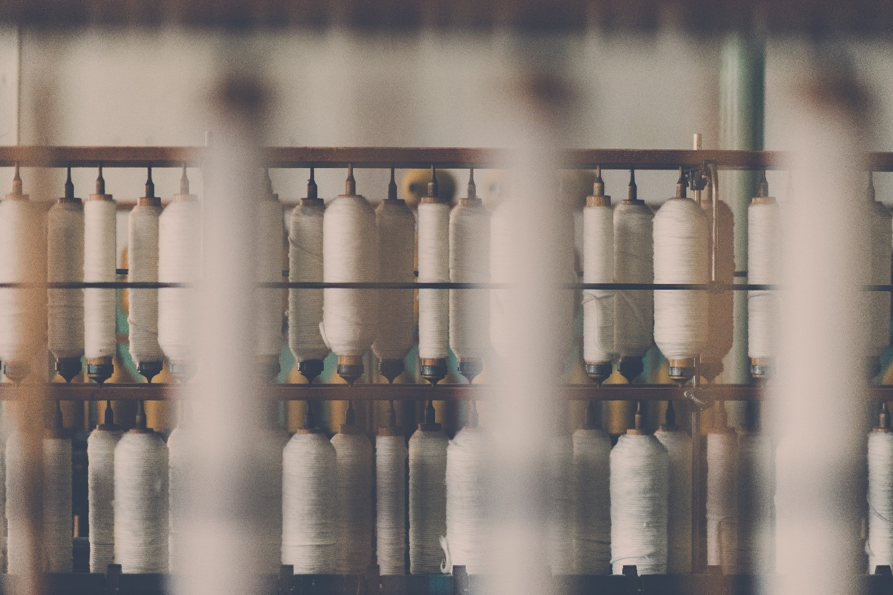
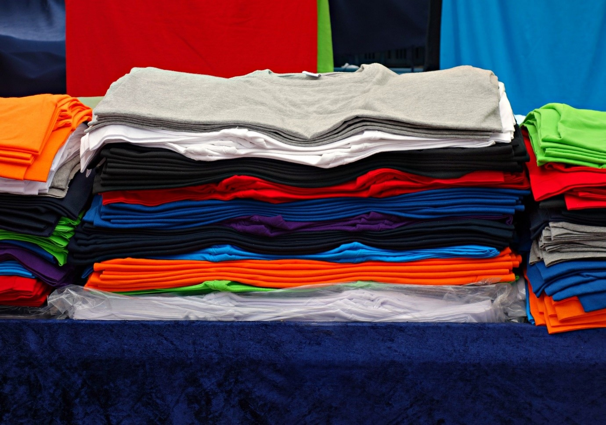
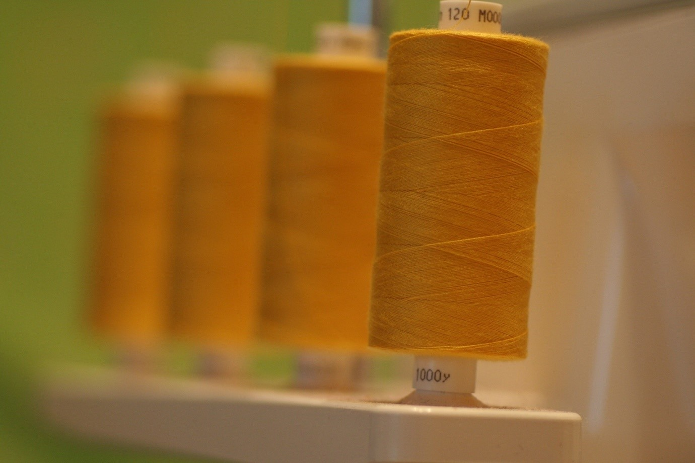

สวัสดีค่า สำหรับบล็อกนี้สมศรีจะมาให้ความรู้ในเรื่องในการทำเสื้อแต่ละชนิดกันนะคะ

1. ผ้าฝ้าย (Cotton)
ผ้าชนิดนี้เป็นผ้าที่ได้รับความนิยมสูงสุด และพบเห็นได้ทั่วไป เพราะมีราคาที่เหมาะสม ไม่แพงไม่ถูกเกินไป และเนื้อผ้าค่อนข้างระบายความร้อนได้ดี ดูดความชื้นดี เหมาะสำหรับอากาศประเทศไทยที่ร้อนอบอ้าวมากๆค่ะ สำหรับผ้าฝ้ายของทางโรงงานเรามี 2 ประเภทค่ะ

> ประเภทแรก Cotton Comb
เป็นเนื้อผ้าเกรดดีที่สุดของผ้า Cotton ค่ะ เนื้อผ้าจะเกิดจากเส้นใยฝ้ายพันธ์ดีเส้นยาว ที่คัดสรรมาเพื่อทอโดยเฉพาะ ส่งผลให้เสื้อที่ผลิตออกมามีอัตราการหดหลังซักต่ำ และตัวเส้นใยผ้าเรียงสลวยเป็นระเบียบ ผ้าชนิดนี้เหมาะสำหรับผู้ที่จะสร้าแบรนด์ของตนเอง โดยเน้นในเรื่องของคุณภาพค่ะ แต่ก็สามารถสกรีนใส่กันสำหรับนักเรียนนักศึกษาที่ทำกิจกรรมต่างๆได้ เช่นเดียวกัน แต่มักไม่ค่อยเป็นที่นิยม
> ประเภทที่2 Cotton Semi-Comb
เป็นเนื้อผ้าเกรดรองลงมาจาประเภทแรก บางเจ้าอาจจะมีการปลอมเนื้อผ้าตัวนี้เป็นตัวเดียวกับเนื้อผ้า Comb เนื่องจาก แยกออกยาก จากวิธีการสัมผัสและการมองเห็น เพราะต่างกันเพียง เส้นใยฝ้ายที่ใช้นั้น ใช้เส้นที่สั้นกว่า ทำให้ผ้าหลังซักมีอัตราการหดมากกว่าก่อนซัก มากกว่าแบบแรก แต่ไม่เกิน 5% ส่งผลให้เนื้อผ้าแบบนี้เป็นที่นิยมมาก เพราะราคาถูกกว่าประเภทแรก และยังสวมใส่สบาย เนื้อผ้าประเภทนี้เป็นที่นิยมสำหรับ ผู้ที่ริเริ่มทำแบรนด์เสื้อเป็นของตนเอง ใช้สำหรับเป็นเสื้อประกอบกิจกรรมต่างๆสำหรับน้องๆนักศึกษา เสื้อพนักงาน ฯลฯ

2. ผ้าฝ้ายผสมผ้าใยสังเคราะห์ หรือที่ได้ยินกันในชื่อ ผ้า TC
สำหรับเนื้อผ้าประเภทนี้ไม่ค่อยเป็นที่นิยมเท่าไหร่นัก เนื่องจากเป็นผ้าที่ระยายความร้อนได้ไม่ค่อยดีรวมถึงใส่ไม่สบายเท่ากับผ้าฝ้าย แต่เนื้อผ้าประเภทนี้จะค่อนข้างนิ่ม ไม่หด รวมทั้งสีไม่ตก แต่เนื้อผ้าประเภทนี้จะเป็นที่นิยมในงานสกีนแบบ Heat Transfer (ใช้ความร้อนไม่ขึ้นบล็อก) เพราะงานประเภทนี้จะพิมได้ดีบนเนื้อผ้าเส้นใยสังเคราะห์ค่ะ โดยส่วนมากแล้ว ผ้าที่ทางร้านมีสำหรับผ้า TC จะเป็นผ้าสีขาวค่ะเพราะเป็นที่นิยมที่สุดสำหรับเนื้อผ้าชนิดนี้ แต่ทั้งนี้ก็สามารถสั่งได้หากต้องการสีอื่นๆที่ลูกค้าต้องการค่ะ
3. ผ้าเส้นใยสังเคราะห์ หรือเนื้อผ้า TK
เนื้อผ้าประเภทนี้จะค่อนข้างมีคุณสมบัติแบบเดียวกับเนื้อผ้า TC แต่ระบายอากาศได้น้อยกว่าผ้า TC และผ้าจะมีความทิ้งตัวมาก ทำให้เป็นที่นิยมสำหรับทำเสื้อผ้าแฟชั่น โดยเฉพาะงาน Heat Transfer จะได้สีที่ค่อนข้างสมจริงเหมือนที่ต้องการมากกว่าผ้า TC
4. ผ้า TC-LACOST
ผ้าชนิดนี้ใช้ทำเสื้อโปโล เป็นผ้าที่ผลิตจากเส้นใยฝ้ายและเส้นใยสังเคราะห์ผสมค่ะ ผ้าจะบางเบา ใส่สบายและนุ่มติดมือ อีกทั้งราคายังค่อนข้างเหมาะสม ไม่ถูกและแพงเกินไป ส่งผลให้เนื้อผ้าชนิดนี้จึงเป็นที่นิยมมากโดยเฉพาะในหน่วยงานต่างๆค่ะ